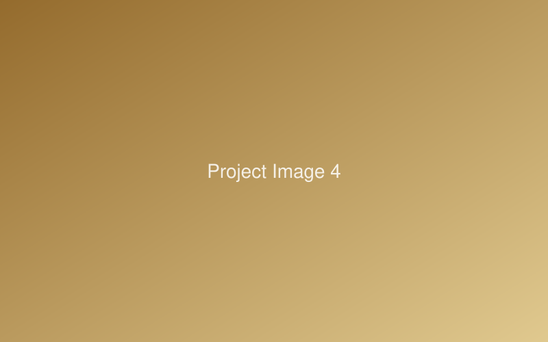

Work
Long-term initiatives and hands-on projects across research, engineering, design, community building, and professional practice.

Self-Partnership BOOK
Co-founded a free media for people in their mid-20s facing life decisions without a "right answer." Led a 7-member team producing articles, interviews with public figures, and workshops around the concept of self-partnership.

Professional Coaching Practice
250+ paid 1-on-1 hours with 30+ clients — young professionals and startup executives. CICP™ (ICF-accredited program) and National Licensed Career Consultant (Japan).

Dynamic-Equilibrium Management
Leading the launch of a management framework integrating life-science perspectives (dynamic equilibrium, self-organization) with management theory at Globe-ing Inc., engaging 100+ members and an executive consortium.

A2E Japan Launch — McKinsey Academy
Drove the Japan launch of the "Ability to Execute" organizational-change program with its founding Senior Partner: executive workshops, client-facilitator training, and offering design.
Deeptech Entrepreneurship Course — UTokyo
Senior Advisor to the School of Engineering's deeptech entrepreneurship course: program design and operations, guest-speaker coordination, and mentoring student founders.
CS Intro Web Guide for Women
Founded a beginner-friendly CS media for women entering tech, born from my own struggle learning engineering without a community. Led a 4-member team from user interviews to content design and launch.
CROVA — Venus Atmosphere Observation Mission
Capstone design (2-person team): full preliminary design of a micro-satellite Venus mission — orbit & trajectory, propulsion, attitude control, thermal, structure, X-band comms, and power — validated under worst-case conditions.
Torsional Haptic Device
At Rice University (O'Malley Lab), designed a novel torsional haptic device in SolidWorks, 3D-printed it, programmed motor control on Arduino, and ran a user study — all within five weeks.
Google Translate — Contribution UI/UX
As a Google SWE intern on the Translation team, proposed and implemented UI/UX (JavaScript, front- and back-end) encouraging users to contribute translation data, validated across locales.
RNN Motion-Trajectory Regeneration
At OIST (Prof. Jun Tani), implemented Elman and continuous-time RNNs in PyTorch to regenerate motion trajectories, with systematic experiments over learning rules and architectures.
Palm Letter Session — Zen2.0 Kamakura
A "place design" project accepted to Zen2.0, an international mindfulness conference: a session helping participants reconnect with their authentic selves through letters written on their palms.
Bonsai — Laundry-Folding Robot
Department project: designed the prototype of a laundry-folding robot end-to-end, developing hands-on hardware implementation skills.